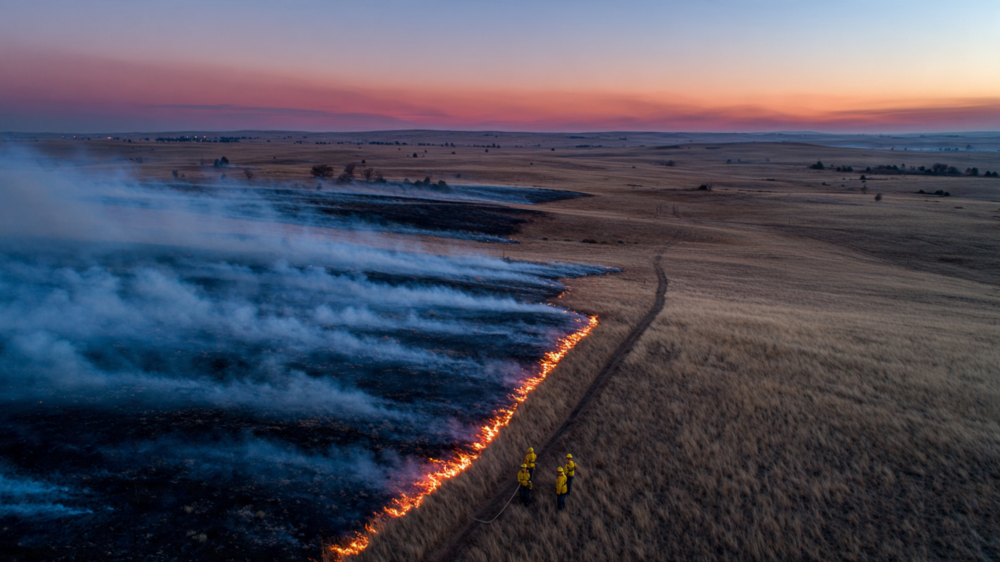

Prescribed Fire Permitting & Compliance SaaS for Private Landowners and Burn Cooperatives
The United States burns 10 million acres under prescription every year. Eighty-four percent of that fire happens on state and private land, conducted by ranchers, timber companies, conservation groups, and 140+ volunteer burn cooperatives who coordinate their work through text messages, paper forms, and phone calls to air quality districts that may or may not pick up. The Bipartisan Infrastructure Law poured $5 billion into wildfire management. The National Prescribed Fire Act of 2025 is pushing through Congress. Everybody agrees America needs more good fire. Nobody has built the compliance layer that makes it legal to light the match.

The Problem
Fire is not optional in American ecosystems. Longleaf pine forests, tallgrass prairies, oak savannas, and chaparral all evolved with regular fire and collapse without it. A century of suppression has loaded 80 million acres of federal land alone with hazardous fuel accumulation, and the bill comes due every summer in the form of catastrophic wildfire. The solution everyone agrees on is prescribed fire: planned burns conducted under controlled conditions to reduce fuel loads, restore habitat, and prevent the uncontrollable conflagrations that destroy towns.
The scale of current prescribed burning is significant and growing. A 2021 survey by the National Association of State Foresters documented 10 million acres treated with prescribed fire in 2019, a 28% increase since their first survey in 2011. The 2020 survey found 9.4 million acres treated despite pandemic disruptions, with a critical detail: 84% of all prescribed fire in the country occurred on state and private lands, not federal. The U.S. Forest Service, which dominates public discussion of prescribed fire, accounts for roughly 1.2 million acres per year. Private landowners, ranchers, state agencies, and volunteer cooperatives burn the other eight million.
Those eight million private-land acres each require permits, and the specific requirements vary by state, county, and air quality district in a patchwork that would be comical if it weren't so consequential. A typical prescribed burn on private land in a regulated state requires some combination of: a written burn plan documenting objectives, weather parameters, contingency resources, and notification procedures; a burn permit from the state forestry agency or local fire authority; an air quality permit or smoke management plan filed with the regional air district; proof of liability insurance or enrollment in a state claims fund; verification that the burn boss holds applicable certifications (California requires a State Certified Prescribed-Fire Burn Boss credential for certain burns, and as of May 2026 only 67 individuals hold this active certification statewide); notification to neighboring landowners and local fire departments within specified timelines; and post-burn reporting documenting acres treated, smoke impacts, and whether the fire stayed within prescription.
Every one of those steps happens manually, and the friction compounds with every jurisdiction boundary. A rancher in the Texas Hill Country calls the county to check burn ban status, then calls the Texas Commission on Environmental Quality to register the burn, then calls the local VFD to notify, then texts the neighbors, then files paperwork afterward in a sequence that consumes half a day before a single match is struck. A timber company in Oregon navigates the Department of Environmental Quality's smoke management program, which designates permissive burn days based on atmospheric ventilation forecasts that change daily; miss the window and you wait another week, burn on a no-burn day and you face fines that can reach $10,000 per violation. In California, the Air Resources Board coordinates with 35 local air districts, each maintaining its own burn-day determination process, permit requirements, and reporting forms in a regulatory maze that even experienced practitioners describe as prohibitive.
The Gap in the Market
The closest thing to a digital platform for prescribed fire practitioners is the Tall Timbers Prescribed Burn Planner, a free tool developed by the Tall Timbers Research Station in Tallahassee, Florida, with grant funding from the U.S. Forest Service. It allows practitioners to set weather and wind parameters for burn units, receive notifications when forecast conditions match their prescription windows, and store post-burn data for adaptive management reviews. Recent updates added smoke modeling and geospatial polygon mapping. But Tall Timbers states explicitly that the tool is "not intended to replace the requirements for obtaining and maintaining burn permit records," which means it handles the science of when to burn while leaving entirely untouched the bureaucracy of whether you're allowed to.
| Tool / Platform | What It Does | What's Missing |
|---|---|---|
| Tall Timbers Burn Planner | Weather-window matching, smoke modeling, post-burn data logging. Free, non-profit. Integrated with NASF National Fuels Treatment Tracking. | No permitting workflow. No air quality district integration. No insurance verification. No neighbor notification automation. No compliance audit trail. |
| IFTDSS (Interagency Fuels Treatment Decision Support System) | Federal tool for fuel treatment planning. Landscape modeling, wildfire risk assessment, treatment comparison analysis. | Designed for federal land managers, not private landowners or PBAs. Complex GIS interface. No state/local permitting layer. No private-land compliance workflow. |
| Texas A&M Forest Service Online Tools | Checklists, burn plan templates, notification forms. Training resources for Certified and Insured Prescribed Burn Managers. | Texas-only. Static PDF forms, not a workflow platform. No integration with TCEQ air quality permits or county burn ban status. No multi-burn season management. |
| Planscape (California/USFS/Google.org) | Open-source landscape prioritization tool. Helps identify where to treat fuel loads using state/federal data layers. | Answers "where should we treat?" not "are we allowed to burn today?" No operational permitting. No private landowner workflow. |
| State forestry agency portals | Most states offer online burn permit applications (varying quality). Some have burn ban status pages. | Siloed per state. No cross-agency coordination. No air quality integration. No post-burn compliance tracking. Landowner must navigate each system independently. |
The pattern repeats across the wildfire-tech landscape: there are sophisticated tools for deciding where and when fire should go, and nothing for the paperwork that determines whether it can legally happen.
The Solution
A multi-state compliance platform that takes a prescribed burn from plan through permit through execution through post-burn reporting, handling the regulatory coordination that currently lives in phone calls and filing cabinets:
1. Regulatory rules engine (the hard part): A structured database of prescribed fire permitting requirements by state, county, and air quality district. What certifications does the burn boss need, what insurance minimums apply, which agency issues the burn permit, what are the notification requirements and timelines, and what post-burn reports must be filed? This isn't a static reference guide but a decision tree that takes a burn location, planned acreage, fuel type, and burn date and produces a complete checklist of every compliance step required, pre-populated with the correct forms, contact information, and deadlines. Building it requires reading hundreds of state statutes, administrative codes, and local air district ordinances across every target state; maintaining it demands monitoring legislative sessions, agency rule changes, and daily burn ban updates in near real-time, which is precisely what makes it a moat that no weekend project can replicate.
2. Burn-day intelligence layer: Automated integration with air quality district burn-day declarations, National Weather Service spot forecasts, and county burn ban status. When a practitioner has a burn unit in their queue, the platform monitors all three inputs and sends a composite alert: "Burn Unit 7: Air quality district says permissive, NWS wind forecast within your prescription window, county burn ban inactive. You are clear to burn today. Permit expires in 4 days." This collapses what currently takes a burn boss 30 to 45 minutes of phone calls and website checks into a single notification.
3. Permit and notification workflow: Digital submission of burn permits to state forestry agencies (starting with states that accept electronic filings and expanding through API partnerships), combined with automated neighbor notification via email, text, or postal mail with proof of delivery, local fire department notification with GPS coordinates and planned burn parameters, and pre-burn insurance verification confirming coverage is active and limits meet state requirements. For California practitioners, the platform tracks enrollment in the $20 million Prescribed Fire Liability Claims Fund, which provides up to $2 million in coverage per project and has its own application workflow that must be completed before any burn commences.
4. Post-burn compliance and reporting: Mobile-first field reporting captures the data burn bosses already record but automates the packaging. The burn boss logs ignition time, crew count, weather observations, acres treated, and any smoke complaints from a phone app; GPS tracks the actual burn perimeter and overlays it on the permitted area; timestamped photos document conditions before, during, and after ignition. Auto-generated post-burn reports formatted for the relevant state agency and air quality district replace the manual paperwork that often sits undone until the next burn season. All records live behind a tamper-evident audit trail for use in any future liability proceedings, transforming what was a shoebox of paper into a defensible compliance record.
5. PBA management dashboard: The 140+ Prescribed Burn Associations operating across the country are volunteer organizations that pool equipment, training, and labor to help members conduct burns. They need member certification tracking that answers who holds what credentials and when they expire, equipment inventory covering drip torches, radios, and PPE, burn scheduling across multiple member properties throughout the season, and end-of-year reporting for boards and funders. No PBA management tool exists today, and most coordinators stitch together spreadsheets, group texts, and memory to run organizations conducting thousands of acres of prescribed fire per year.
Original Analysis: The Compliance Overhead Per Acre
Nobody has quantified the administrative cost of prescribed fire compliance on private land, so here is a rough calculation based on a representative scenario. A burn boss planning a 200-acre grassland burn in central Texas spends approximately: 1 hour reviewing and completing the state burn plan template; 30 minutes registering the burn with TCEQ for air quality; 20 minutes calling the county to confirm no burn ban is active; 30 minutes notifying adjacent landowners (assume 4 neighbors); 15 minutes notifying the local volunteer fire department; 20 minutes confirming insurance documentation is current; and 45 minutes post-burn filing reports. Total administrative time comes to approximately 3.5 hours per burn event, at a loaded cost of $75/hour for a professional consulting forester or zero dollars per hour but very much not free for a volunteer rancher's Saturday. At $75/hour, that's $262.50 in compliance labor for a 200-acre burn, or $1.31 per acre in pure administrative overhead.
Scale that to the 8 million private-land acres burned annually, and if compliance labor averages $1.00 to $1.50 per acre (lower for large burns where fixed costs amortize over more ground, higher for small burns where a 200-acre grassland patch carries the same permit overhead as a 2,000-acre timber stand), the nationwide compliance labor burden is $8 to $12 million per year spent on phone calls, paperwork, and form-filling that does nothing to improve the quality of the burn or make the fire safer. That figure is pure regulatory friction, and any reduction in it directly translates to more acres burned under prescription, which is the explicit policy goal of every state and federal wildfire strategy document published in the last five years.
The real cost is harder to measure because it hides in burns that never happen at all. A study of 680 Texas and Oklahoma landowners found that perceived legal liability was the strongest predictor of whether a landowner would use prescribed fire, and PBAs reduce this barrier through training and group support, but the compliance maze itself deters landowners who would otherwise burn their pastures every spring. Every acre that doesn't burn under prescription is an acre that accumulates fuel for the next wildfire, and the cost of one escaped wildfire dwarfs a lifetime of compliance overhead.
Revenue Model
| Revenue Stream | Amount | Notes |
|---|---|---|
| Individual landowner subscription | $29/month (burn season) or $199/year | Burn-day alerts, permit workflow, post-burn reporting for up to 5 burn units. Seasonal billing option: pay only Oct-Apr in Southeast, Apr-Oct in Great Plains. |
| PBA organizational subscription | $99/month | Up to 50 members. Member certification tracking, equipment inventory, burn scheduling, season reporting. Additional members at $2/member/month. |
| Professional land manager tier | $499/month | Consulting foresters and prescribed fire contractors managing burns for multiple clients. Unlimited burn units. Client-facing compliance reports. White-label post-burn documentation. |
| State agency data partnership | $50K-200K/year per state | Aggregated, anonymized prescribed fire activity data for state-level reporting. Replaces the biennial NASF survey with real-time dashboards. Saves state foresters from manual data collection. |
| Insurance carrier integration | $5-15 per policy verification | Automated proof-of-coverage API for insurers writing prescribed fire liability policies. Replaces phone-and-fax verification workflow. |
Unit economics for PBA subscription: Average PBA has 30-40 members conducting 15-25 burns per season across 2,000-5,000 acres (Deak et al., 2025). At $99/month for 9 active months = $891/year. PBA annual budgets range from $500 to $50,000, with a median around $5,000-10,000 for established groups. An $891 software subscription is 9-18% of a mid-range PBA budget. Defensible, especially if the platform saves 20+ hours of coordinator time per season, which at volunteer valuation ($29/hour, per Independent Sector) equals $580+ in recouped labor.
Market Size
TAM: The addressable universe includes every entity that conducts or manages prescribed fire on non-federal land in the United States. Rough segmentation: 140+ PBAs with a combined 3,500-5,000 active members; an estimated 8,000-12,000 consulting foresters and prescribed fire contractors (based on state certification registries and professional association membership); 50 state forestry agencies; approximately 200,000 private landowners who have conducted at least one prescribed burn in the past five years (extrapolated from NASF survey participation rates and state permit data); and an unknown number of ranches, timber investment management organizations, and conservation nonprofits. At blended subscription pricing of $200/year across all tiers: $40-50M/year. Adding state data partnerships ($50-200K × 20 active prescribed fire states = $1-4M) and insurance integrations: $45-55M total addressable.
SAM: Focus on the 15 states with the highest prescribed fire activity and the most complex regulatory environments: Texas, Florida, Georgia, Alabama, Mississippi, North Carolina, South Carolina, Louisiana, Oklahoma, Kansas, Nebraska, California, Oregon, Virginia, and Minnesota. These states account for over 80% of US prescribed fire acreage. Target PBAs, professional contractors, and landowners with 500+ acres. Approximately 100 PBAs, 4,000 professional practitioners, and 50,000 active private burners. At blended pricing: $12-15M/year.
SOM (year 3): 60 PBAs at $99/month ($71K), 800 professional land managers at $499/month ($479K), 3,000 individual landowners at $199/year ($597K), plus 3 state data partnerships at $100K ($300K). Total: $1.45M ARR.
Why Now
Federal money is flooding the space. The Bipartisan Infrastructure Law allocated $5 billion over five years for wildland fire management, including $1.5 billion for the Interior Department and $3.5 billion for the Forest Service. The President's 2024 budget proposed $4.2 billion for wildfire management. The Community Wildfire Defense Grant program has distributed $750 million to 258 projects across 31 states. This money creates demand for prescribed fire, which creates demand for compliance infrastructure.
The National Prescribed Fire Act is moving. S.2015, introduced by Senators Wyden and Budd with bipartisan support, directs federal agencies to expand prescribed fire, creates a prescribed fire workforce, and establishes funding for collaborative programs with private landowners and Tribes. The Senate committee held a hearing on December 17, 2025. If enacted, it will push millions of additional acres into the prescribed fire pipeline, all of which will need compliance tracking.
State liability reform is unlocking private-land burning. California established a $20 million Prescribed Fire Liability Claims Fund in 2023, covering up to $2 million per project. Oregon created its own liability claims fund the same year. Indiana signed legislation in 2025 expanding prescribed fire capacity and defining liability standards for certified participants. At least 30 states now have some form of prescribed fire liability protection, up from fewer than 10 a decade ago. Each reform creates new compliance requirements (enrollment forms, certification verification, claims procedures) that need a platform.
The PBA movement is exploding and needs organizational tools. From one association in Nebraska in 1995 to over 140 across 21+ states as of 2025, with seven new PBAs forming in North Carolina alone in recent years. The Forest Service's goal of treating 50 million acres over 10 years (20 million USFS + 30 million other lands) depends on private-land burning capacity that only PBAs and contractors can provide, and those groups need organizational infrastructure that matches the scale of what they're being asked to accomplish.
The 2022 Hermit's Peak disaster changed the risk calculus. Two Forest Service prescribed fires that escaped control in New Mexico merged into the state's largest wildfire, burning 340,000 acres and destroying over 1,000 structures. The subsequent GAO investigation found the Forest Service had not established outcome-oriented performance measures or implementation plans for its safety reforms, and the fallout raised the bar for documentation and compliance across all prescribed fire programs, federal and private alike, because better records are no longer optional when a single escaped fire generates a billion-dollar federal disaster declaration.
Startup Costs
| Category | Cost | Notes |
|---|---|---|
| Regulatory rules engine (15 states, 12 months) | $320K | 2 full-stack developers + 1 domain expert (former state prescribed fire coordinator or consulting forester). Read and encode state statutes, admin codes, air district rules, and local ordinances. This is the moat and the hardest part. |
| Platform development (web + mobile, 10 months) | $240K | 2 developers. Permit workflow engine, PBA dashboard, burn-day alert system, mobile field reporting app, post-burn report generator. |
| Air quality district integrations (15 states) | $80K | 1 developer. Screen-scraping and API integration with state air quality burn-day determination systems (most publish daily via web, few have APIs). |
| Pilot program (10 PBAs, 2 burn seasons) | $40K | Free subscriptions for pilot PBAs in exchange for feedback and case studies. Travel to PBA burn events for field testing. Swag and conference booth materials. |
| Domain expertise / advisory board | $30K | Retainer for 3-4 advisors: state forester (retired), prescribed fire liability attorney, PBA coordinator, air quality compliance specialist. |
| Legal and compliance (own compliance) | $25K | Terms of service, liability disclaimers (the platform provides compliance workflow, not legal advice), privacy policy, state-by-state regulatory review. |
| Operating buffer (12 months) | $50K | Cloud hosting, monitoring APIs, operational costs during pre-revenue period. |
| Total | $785K |
Limitations
The 200,000 private landowner estimate is extrapolated from fragmentary data. No centralized database of prescribed fire practitioners exists in the United States. The NASF/CPFC biennial surveys collect state-level aggregate data but do not count individual burners. Some states track burn permits (Texas issued over 4,000 in 2018), while others rely on self-reporting or don't track at all. The actual number of private landowners who conduct prescribed fire could be significantly higher or lower than 200,000.
The compliance overhead calculation ($1.00-1.50/acre) is based on a single stylized scenario in Texas. Compliance burden varies enormously by jurisdiction. A rancher in Kansas, which has minimal permitting requirements, may spend 30 minutes total on paperwork. A timber company in California navigating CAL FIRE permits, CARB air quality requirements, CEQA review, and the Prescribed Fire Claims Fund enrollment may spend 20+ hours. The national aggregate figure ($8-12M) should be treated as an order-of-magnitude estimate, not a precise measurement.
The regulatory rules engine requires constant maintenance because the landscape of prescribed fire law shifts every legislative session. State legislatures amend prescribed fire statutes regularly (Indiana's reform was signed in 2025; California has passed multiple bills since 2018), air quality districts update their burn-day determination procedures on their own timelines, and county burn bans can change daily based on weather conditions and fire danger ratings. A stale rules engine is worse than no rules engine, because it creates false confidence that a practitioner has met requirements that may have changed since the database was last updated, and maintaining accuracy across 15 states requires dedicated staff and monitoring infrastructure that may cost more than the initial development.
The biggest PBA market segment (Great Plains ranchers) may have the weakest willingness to pay. Oklahoma and Kansas have relatively permissive prescribed fire regimes with minimal compliance overhead. Ranchers in those states have been burning without software for decades and may not perceive enough friction to justify $199/year. The value proposition is strongest in high-regulation states (California, Oregon, the Southeast) and weakest in the states where PBAs are most concentrated.
Strongest Counterargument
State forestry agencies could do this themselves, and some already are. The Texas A&M Forest Service publishes online burn plan tools, checklists, and grant applications. Oregon's DEQ runs a smoke management program with daily burn-day declarations. California is building Planscape with Google.org support. The federal government spent $300 million through the Joint Fire Science Program over 24 years building tools like IFTDSS. If these agencies pooled a fraction of the billions flowing into wildfire management, they could build a unified prescribed fire compliance portal as a public good, free to all practitioners, maintained with taxpayer dollars, and integrated natively with their own permitting systems.
The counterpoint has two parts. First, they've had decades and haven't done it. The federal wildfire tech ecosystem is a graveyard of overlapping, poorly integrated systems. IFTDSS, Planscape, WFDSS, FPA, NFPORS, and a dozen other acronyms serve adjacent functions with minimal interoperability. State agencies operate in silos, each building their own portal with no incentive or mechanism for cross-state coordination. The NASF survey itself, the only source of national prescribed fire data, is conducted by mailing questionnaires to state foresters every two years and manually compiling the results. The institutional capacity to build a real-time, multi-state compliance platform does not exist in government today. Second, the highest-value features (PBA management, professional contractor workflow, insurance verification) serve private organizations, not government agencies. A state forester has no mandate to build tools for volunteer cooperatives. The compliance layer lives in the gap between government requirements and private-land practitioners, and that gap is exactly where startups operate.
What You Can Do
If you're a private landowner who wants to start burning: Find your nearest Prescribed Burn Association at the Coalition of Prescribed Fire Councils or the Great Plains Fire Science Exchange PBA map. Joining a PBA gets you training, equipment access, experienced burn bosses, and a crew of neighbors to help. Over 140 PBAs operate in 21+ states. If none exists in your area, the PBA formation resources from Oklahoma State University and NC State Extension can help you start one. Before your first burn, contact your state forestry agency for permit requirements and your county for burn ban status.
If you're a PBA coordinator drowning in spreadsheets: Document your workflow in detail, because you are the user research for this product. How many hours per season do you spend tracking member certifications, scheduling burns, filing permits, and generating reports? What's the total compliance burden in hours and dollars? Share that data with Southeast Prescribed Fire Update and the Coalition of Prescribed Fire Councils. The aggregated evidence of administrative burden is what drives both policy reform and investment in tools.
If you're a developer considering this space: Start with Texas and Florida. Texas has the most active prescribed fire community (402,017 acres treated in 2018, a record), a mature PBA network, and a well-documented regulatory framework through Texas A&M Forest Service. Florida burns more acres per capita than any other state and has strong institutional support through the Florida Forest Service and Tall Timbers Research Station. Build the regulatory rules engine for those two states first, recruit 5-10 pilot PBAs from each, and expand from there. The burn season in the Southeast (January through April) and Great Plains (February through May) gives you a natural development and testing cycle.
If you're an investor: Watch for the National Prescribed Fire Act of 2025. If S.2015 passes with its prescribed fire workforce provisions and collaborative program funding, it creates a federal tailwind that accelerates every state-level trend already underway. The $5 billion BIL allocation sunsets in 2026, but the policy direction is bipartisan and durable. Climate adaptation infrastructure is a multi-decade investment thesis, and prescribed fire compliance is the picks-and-shovels play within it.
The Bottom Line
America's wildfire crisis will not be solved by more fire trucks. It will be solved by more controlled fire on private land, conducted by the ranchers, foresters, and volunteers who know their landscapes. The money is committed, the legislation is moving, the liability reforms are spreading, and the burn cooperatives are multiplying. What's missing is the connective tissue between the people who want to burn and the agencies that have to approve it. Right now, that connective tissue is a burn boss's phone, a stack of forms, and a prayer that the air quality district picks up before the weather window closes. A platform that reduces the compliance overhead per burn by even 50% doesn't just save paperwork. It puts more good fire on the ground, which means fewer bad fires that level towns. The regulatory rules engine is hard to build and harder to maintain, which is exactly why it's a moat. The first company to encode the permitting requirements for 15 states owns the compliance layer for the fastest-growing land management practice in the country.